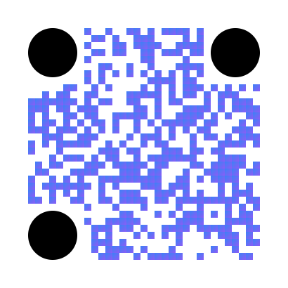
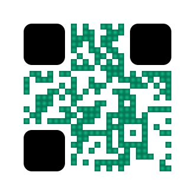
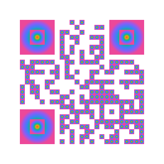

1. Gradiente Lineal + Ojos Circulares

Gradiente Linear 45°
Ojos Circulares
Colores: Blue → Purple
2. Gradiente Radial + Ojos Rounded

Gradiente Radial
Ojos Rounded-Square
Colores: Green Gradient
3. Gradiente Cónico Multicolor

Gradiente Cónico
6 Colores
Efecto Arcoíris